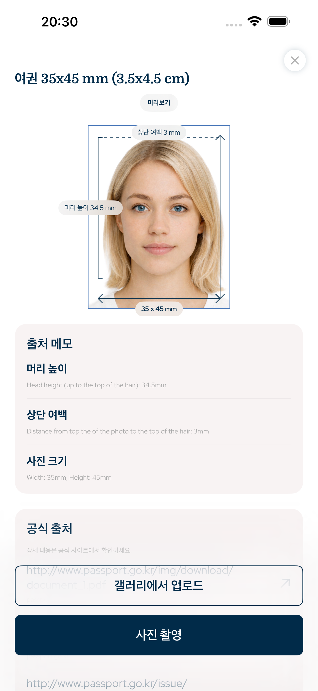

South Korea · 여권사진 앱, 증명사진 앱, 비자사진, 신분증사진, 운전면허 사진
여권사진과 신분증사진을 정확한 크기로 준비
이 iPhone 앱은 여권사진, 비자사진, 신분증사진, 체류증 사진, 운전면허 사진을 사진 크기, 얼굴 비율, 상단 여백, 배경, 디지털 또는 출력용 내보내기에 맞게 준비합니다.
- 얼굴
- AI 변경 없음
- 자르기
- 머리 + 상단 여백
- 내보내기
- 디지털 + 인쇄

상단 여백
정확
얼굴 비율
가이드 제공
검색 가능한 요건
공식 사진 규격을 기반으로 설계됨
앱은 사진 크기, 픽셀 내보내기, 머리 높이, 얼굴 위치, 상단 여백, 배경, 인쇄 레이아웃 등 측정 가능한 문서 사진 규칙에 집중합니다.
얼굴 비율과 상단 여백 가이드
AI 얼굴 변경 없음
디지털 파일 및 출력용 시트
South Korea document types
이 앱으로 준비할 수 있는 사진
여권사진 앱은 디지털 파일 또는 인쇄용 시트가 필요한 iPhone 사용자를 위한 일반적인 공식 사진 워크플로우를 지원합니다.
여권사진
비자사진
신분증사진
체류증 사진
출력용 시트
사진 무결성
AI 얼굴 변경 없음
워크플로우는 의도적으로 실용적입니다: 이미지를 자르고, 머리를 맞추고, 얼굴을 보존하고, 배경을 준비한 다음 올바른 크기로 내보냅니다. 공식 서류 사진 준비를 위한 것이며, 미용 보정이 아닙니다.
1국가와 문서 유형 선택
2머리와 여백 정렬
3디지털 파일 또는 인쇄용 시트 내보내기
자주 묻는 질문
FAQ
앱이 AI로 얼굴을 바꾸나요?
아니요. 얼굴 특징을 변경하지 않고 크기, 자르기, 배경, 내보내기를 조정합니다.
여권사진을 만들 수 있나요?
네. 국가와 문서 유형을 선택해 필요한 크기와 구도로 내보낼 수 있습니다.
인쇄할 수 있나요?
네. 디지털 파일 또는 출력용 시트로 내보낼 수 있습니다.
여권사진 앱
iPhone에서 여권사진, 비자사진, 신분증사진을 준비하세요. 사진 크기, 얼굴 비율, 상단 여백, 배경, 출력용 내보내기를 맞춥니다.
App Store에서 다운로드